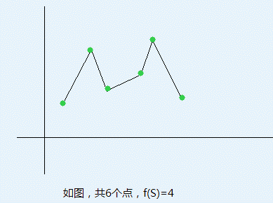

第一行两个整数n和k，以下n行每行两个数(xi, yi)表示第i个点的坐标。所有点的坐标值都在[1, 100000]内，且不存在两个点，x坐标值相等或y坐标值相等
二维平面上有n个点(xi, yi)，现在这些点中取若干点构成一个集合S，对它们按照x坐标排序，顺次连接，将会构成一些连续上升、下降的折线，设其数量为f(S)。如下图中，1->2,2->3,3->5,5->6（数字为下图中从左到右的点编号），将折线分为了4部分，每部分连续上升、下降。

现给定k，求满足f(S) = k的S集合个数。
第一行两个整数n和k，以下n行每行两个数(xi, yi)表示第i个点的坐标。所有点的坐标值都在[1, 100000]内，且不存在两个点，x坐标值相等或y坐标值相等
输出满足要求的方案总数 mod 100007的结果
5 1
5 5
3 2
4 4
2 3
1 1
19
对于100%的数据，n <= 50000，0 < k <= 10